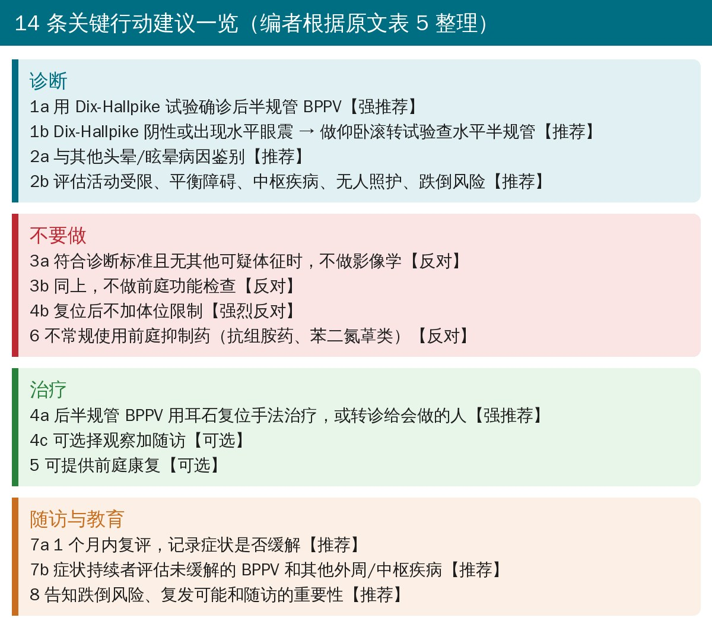
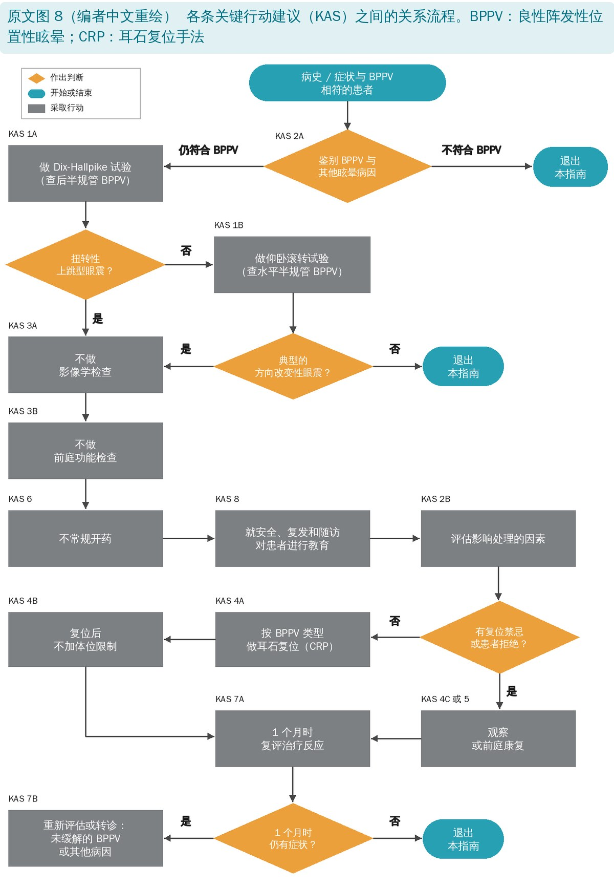
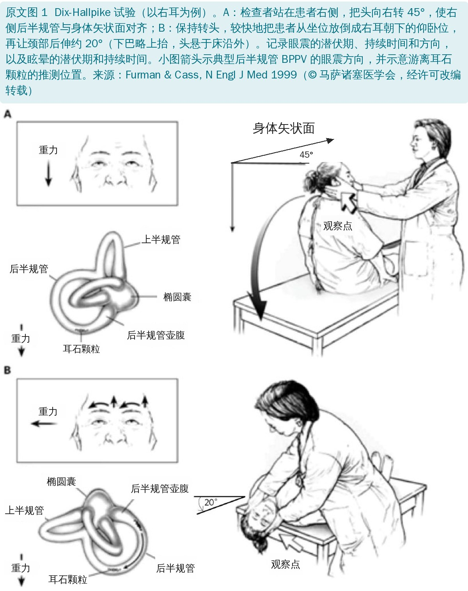
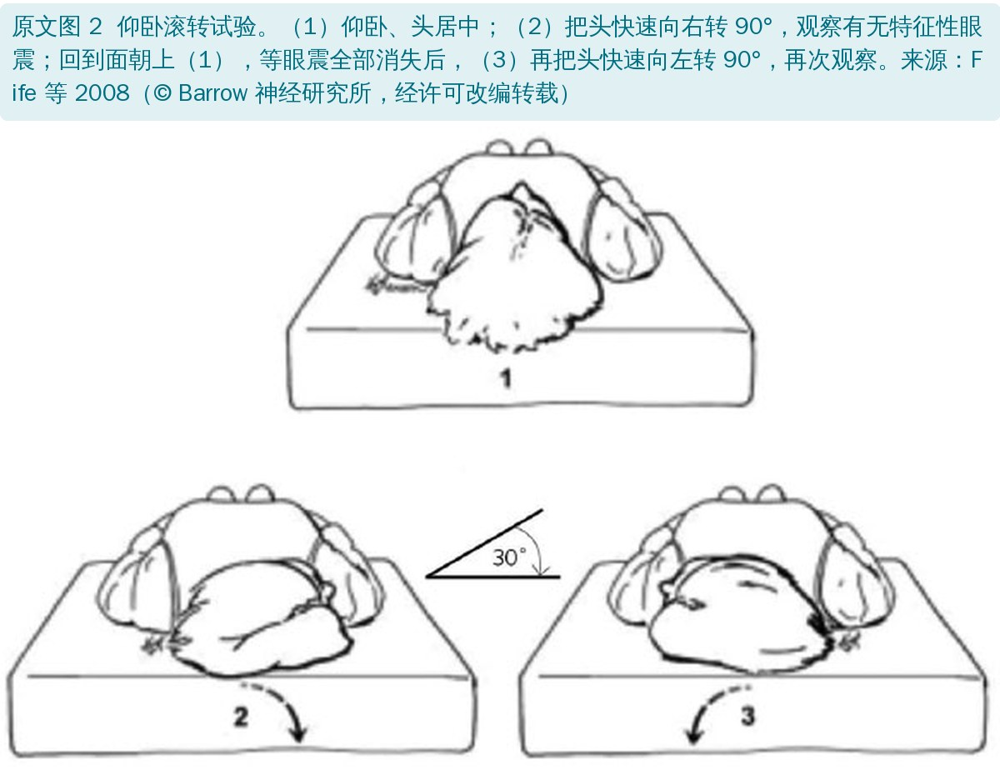
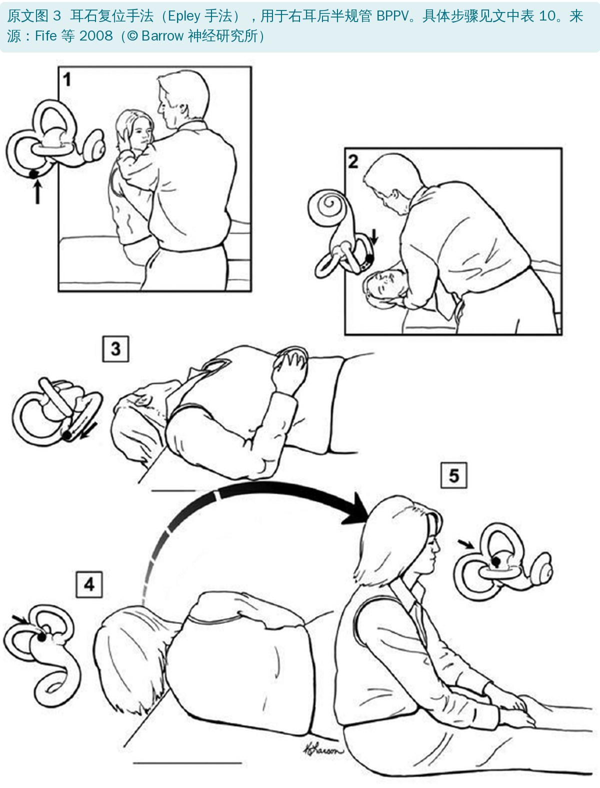
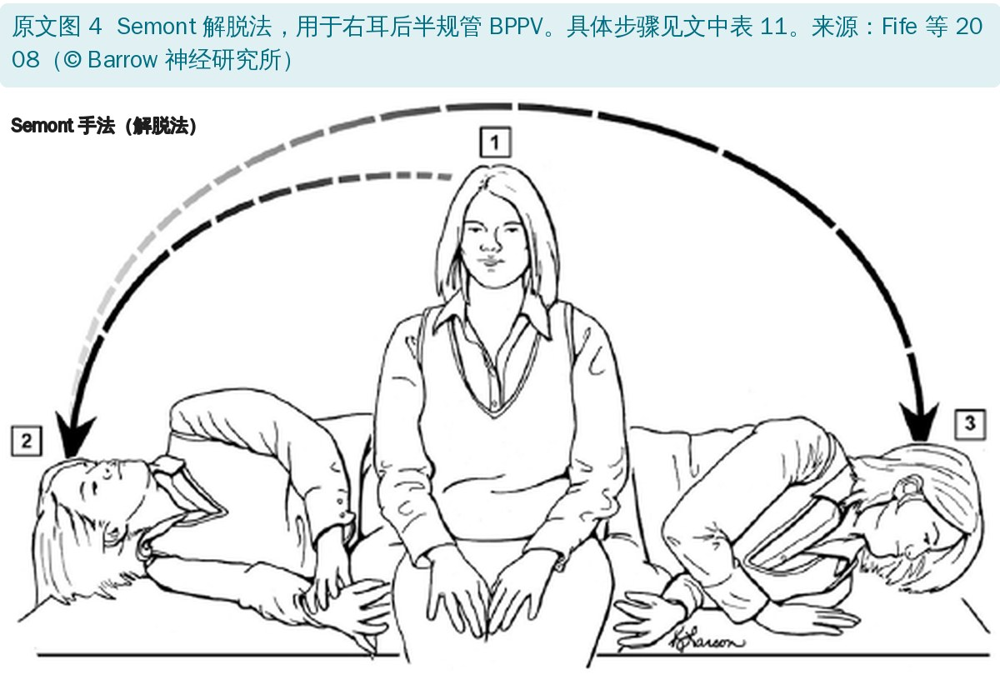
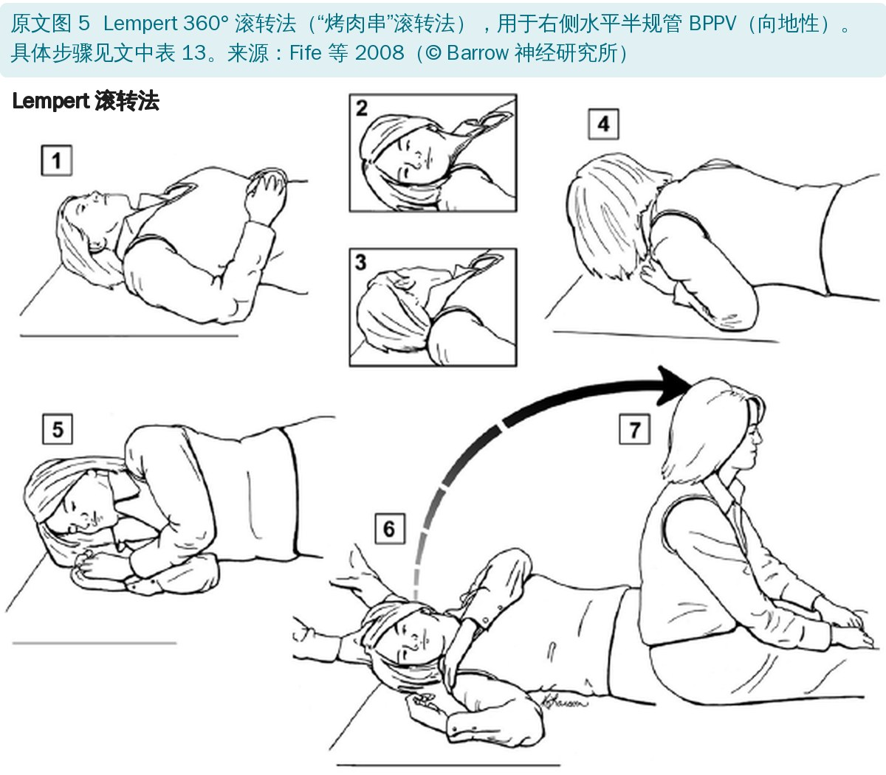
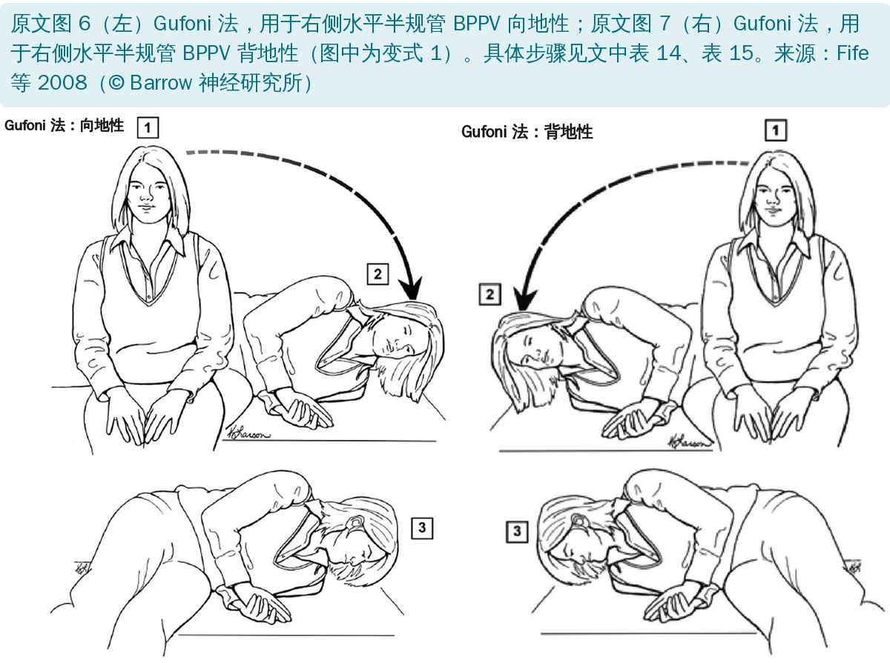

🔖原文信息（编者中文重排）
📚 文献信息
▪ Bhattacharyya N, Gubbels SP, Schwartz SR, et al. Clinical Practice Guideline: Benign Paroxysmal Positional Vertigo (Update). Otolaryngol Head Neck Surg. 2017;156(3S):S1-S47. doi:10.1177/0194599816689667
▪ 发布方：美国耳鼻咽喉头颈外科学会基金会（AAO-HNSF），是 2008 年版指南的更新
▪ 文章类型：临床实践指南。指南小组为多学科，包括耳鼻喉科、神经科、急诊、全科、物理治疗、听力学、护理等，并首次加入患者代表
良性阵发性位置性眩晕（BPPV）就是俗称的“耳石症”：内耳椭圆囊里的耳石脱落，掉进半规管，头部相对重力改变位置时，就会诱发几十秒的天旋地转。它是最常见的前庭疾病，人群一年患病率约 1.6%，终生患病率约 2.4%，女性多于男性，好发于 50～70 岁。
问题在于：BPPV 常被漏诊或误诊，很多患者做了不必要的头颅影像、前庭功能检查，吃了不该吃的前庭抑制药，却没有得到几分钟就能完成的耳石复位手法。老年人未被识别的 BPPV 还和跌倒、日常生活能力下降明显相关。
2017 年的更新纳入了 2 部临床实践指南、20 篇系统评价和 27 项随机对照试验的新证据，主要变化有：新增水平半规管 BPPV 的诊断（仰卧滚转试验）、新增水平半规管的复位手法、强调患者教育和共同决策、新增一张把各条建议串起来的诊疗流程图。
| 术语 | 定义 |
|---|---|
| 眩晕 | 在没有真实运动时，感到自身或周围环境在运动的错觉 |
| 眼震 | 眼球快速、不自主的往返摆动 |
| 前庭系统 | 内耳中的感觉系统，连同前庭神经及其在脑内的联系，为大脑提供平衡和空间定向的基本信息 |
| 位置性眩晕 | 头部相对重力改变位置时诱发的眩晕 |
| BPPV | 以反复发作的位置性眩晕为特征的内耳疾病 |
| 后半规管 BPPV | 脱落的内耳颗粒进入后半规管，异常影响平衡系统而产生眩晕；最常用 Dix-Hallpike 试验诊断 |
| 水平半规管 BPPV | 脱落的内耳颗粒进入水平（外）半规管而产生眩晕；最常用仰卧滚转试验诊断 |
| 管结石症 | 一种发病机制假说：游离的耳石颗粒从椭圆囊移入并聚集在受累半规管壶腹嵴顶附近，产生异常刺激 |
| 嵴顶结石症 | 一种发病机制假说：耳石碎屑黏附在受累半规管的壶腹嵴顶上，产生异常刺激 |
| 耳石复位手法（CRP） | 让患者依次摆出特定体位，把脱落的颗粒移回原处、缓解 BPPV 症状的一组手法；具体选哪种取决于 BPPV 的类型。也称耳石复位操作或复位技术 |
原文表 1：常用术语的定义（中文翻译）
• 沿用 AAO-HNSF 指南制订手册的流程：多学科小组先确定要回答的问题，再系统检索 2008 年后发表的指南、系统评价和随机对照试验
• 每条关键行动建议（KAS）都标注证据等级（A～D、X）、推荐强度（强推荐 / 推荐 / 可选，以及相应的“反对”），并逐条列出获益、风险、成本、价值判断和患者偏好的作用
• 推荐强度和证据等级的定义见文末附录表 3、表 4；考虑过的诊断和治疗手段见附录表 2

🔖14 条关键行动建议一览（编者根据原文表 5 整理）；原文表 5 全文翻译见附录

🔖原文图 8 诊疗流程图（编者中文重绘）
病史只能提示，不能单凭病史诊断 BPPV。典型主诉是起床、翻身、抬头取物、弯腰系鞋带时出现旋转性眩晕，每次不超过 1 分钟；但也有人只说“头晕”“发飘”“站不稳”，约一半患者在发作间期也有不稳感。病史不典型的人里，最多三分之一做 Dix-Hallpike 仍能诱发出位置性眼震。

🔖原文图 1：Dix-Hallpike 试验（英文标注改为中文）
操作步骤（以右耳为例）
• 检查前告知患者可能突然出现剧烈眩晕、恶心，一般 60 秒内消退；摘掉眼镜；让患者坐在检查床上，位置要保证躺下后头能悬出床沿约 20°
• 检查者站在患者右侧，把头向右转 45°，使右后半规管与身体矢状面对齐，并全程扶住头保持转头角度
• 嘱患者睁眼，较快地把患者从坐位放倒成右耳朝下的仰卧位，颈部再后伸约 20°（下巴略上抬，头悬出床沿，由检查者托住）
• 观察眼震的潜伏期、持续时间、方向，并询问有无眩晕
• 眩晕和眼震消失后，慢慢扶回坐位；坐起时眼震可能反向出现，等它自然消退
• 右侧阴性，换左侧再做一遍，才能判定整体阴性
| 项目 | 诊断标准 |
|---|---|
| 病史 | 患者诉头部相对重力改变位置时反复出现眩晕 |
| 体格检查（须全部满足） | • Dix-Hallpike 试验诱发眩晕，伴扭转性（旋转性）、上跳性（朝向前额）眼震 • Dix-Hallpike 体位到位后，眩晕和眼震出现前有一段潜伏期 • 诱发的眩晕和眼震先增强后消退，在眼震出现后 60 秒内消失 |
原文表 6：后半规管 BPPV 的诊断标准（中文翻译）
• 典型眼震：潜伏期一般 5～20 秒（少数可长达 1 分钟）；扭转加上跳，眼球上极朝向下方（受累）耳快速跳动；强度“渐强—渐弱”，60 秒内消失
• 不建议反复做来验证“疲劳性”：患者白白多晕几次，还耽误当场复位，所以疲劳性没被列为诊断标准
• 眼震垂直成分向下跳，可能是前半规管 BPPV（占 1%～3%），但要警惕脑干、小脑病变引起的下跳性位置性眼震
• 诊断准确性：专科医生使用时敏感度 82%、特异度 71%；基层阳性预测值 83%、阴性预测值 52%，所以一次阴性不能完全排除，必要时改天复查
• 慎做或需特殊检查床的人群：颈椎管狭窄、重度脊柱后侧凸、颈椎活动受限、唐氏综合征、重度类风湿关节炎、颈神经根病、Paget 病、强直性脊柱炎、腰背功能障碍、脊髓损伤、已知脑血管病、病态肥胖
病史符合 BPPV、但 Dix-Hallpike 出现水平眼震或没有眼震时，应做（或转诊做）仰卧滚转试验。水平半规管 BPPV 是第二常见的类型，约占转诊 BPPV 的 5%～22%；它自愈更快，所以就诊越晚的门诊看到的比例越低。Epley 复位后耳石也可能“串”到水平半规管。

🔖原文图 2：仰卧滚转试验
• 患者仰卧、头居中 → 快速向一侧转头 90°，观察眼震 → 眼震消失（或没有眼震）后回到面朝上 → 再快速转向另一侧 90°，再观察
• 向地性（较多见）：转向哪侧，眼震就朝哪侧（朝地面）跳；转向患侧时眼震更强。推测耳石在半规管长臂内
• 背地性（较少见）：眼震朝上方的耳朵（背离地面）跳，转向对侧时方向也随之改变。推测耳石黏附在壶腹嵴顶或靠近壶腹
• 两种都是方向改变性位置性眼震；判断患侧的方法见下表，约 20% 的病例仍分不清患侧，可以两侧都治疗，或加做低头—仰头试验
| 方法或情形 | 判断患侧的结论 |
|---|---|
| 仰卧滚转试验（图 2）出现方向改变性眼震，向地性（朝地面）或背地性（背离地面），且一侧明显强于另一侧 | 向地性：眼震最强的一侧为患侧 背地性：眼震最强一侧的对侧为患侧 |
| 后半规管 BPPV 的扭转上跳性眼震，在变换体位过程中变成明显的水平眼震（水平半规管 BPPV） | 与原后半规管 BPPV 同侧 |
| 患者从坐位直接躺成面朝上仰卧，出现短暂水平眼震（躺下眼震ᵃ） | 向地性：眼震背离患侧 背地性：眼震朝向患侧 |
| 仰卧位坐起并低头（“头俯仰试验”，低头眼震） | 向地性：眼震通常朝向患侧 背地性：眼震背离患侧 （与躺下眼震方向相反） |
| 低头—仰头试验ᵃ：记录面朝下低头（bow）和面朝上仰头（lean）时的眼震方向 | 向地性：低头时眼震朝向患侧，仰头时背离患侧 背地性（与向地性相反）：低头时背离患侧，仰头时朝向患侧 |
原文表 7：判断水平半规管 BPPV 患侧的部分方法（中文翻译）
ᵃ 仍需仰卧滚转试验来确定是向地性还是背地性的方向改变性眼震。
鉴别时，头晕的时间特征和诱因比患者用什么词描述更重要。按“急性 / 发作性、有无诱因、慢性”分成四类前庭综合征，BPPV 属于诱发性发作性前庭综合征。
| 急性前庭综合征ᵃ | 诱发性发作性前庭综合征ᵇ | 自发性发作性前庭综合征ᶜ | 慢性前庭综合征ᵈ |
|---|---|---|---|
| 前庭神经炎 | 良性阵发性位置性眩晕 | 前庭性偏头痛 | 焦虑或惊恐障碍 |
| 迷路炎 | 体位性低血压 | 梅尼埃病 | 药物副作用 |
| 后循环卒中 | 外淋巴瘘 | 后循环短暂性脑缺血发作 | 外伤后眩晕 |
| 脱髓鞘疾病 | 上半规管裂综合征 | 药物副作用 | 后颅窝占位 |
| 外伤后眩晕 | 椎基底动脉供血不足 | 焦虑或惊恐障碍 | 颈源性眩晕（不一定） |
| 中枢性阵发性位置性眩晕 |
原文表 9：急性头晕的常见病因，按时间特征和诱因分类（中文翻译）
ᵃ 急性、持续性头晕，持续数天到数周，常伴恶心、呕吐和头动不耐受；ᵇ 由特定且必需的动作（通常是头或身体位置改变）诱发的发作性头晕，每次一般 <1 分钟；ᶜ 无诱因的发作性头晕，可持续数分钟到数小时；ᵈ 持续数周到数月或更久的头晕。
| 耳源性疾病 | 神经系统疾病 | 其他 |
|---|---|---|
| 梅尼埃病 | 前庭性偏头痛 | 焦虑或惊恐障碍 |
| 前庭神经炎 | 后循环短暂性脑缺血发作和卒中 | 颈源性眩晕 |
| 迷路炎 | 脱髓鞘疾病 | 药物副作用 |
| 上半规管裂综合征 | 中枢神经系统病变 | 体位性低血压 |
| 外伤后眩晕 | 椎基底动脉供血不足 | 各种内科情况（如中毒、感染、代谢性疾病） |
| 外淋巴瘘 | 中枢性位置性眩晕 | |
| 内耳病变 |
原文表 8：BPPV 的基本鉴别诊断（中文翻译）
提示中枢病变、不像 BPPV 的眼震
• Dix-Hallpike 出现下跳性眼震，尤其没有扭转成分、做复位后也不改变
• 头位不变时眼震方向自己改变（周期性交替性眼震）
• 凝视诱发、随注视方向改变的眼震；或不做任何诱发就有的自发眼震（也可能是前庭神经炎）
• 规范复位或前庭康复无效，也要怀疑诊断不是 BPPV
BPPV 患者多为中老年人，常合并其他问题，需要评估：活动受限或平衡障碍、中枢神经系统疾病、缺少家庭支持、跌倒风险高。可以先用美国 CDC 建议的三个问题筛查：过去一年跌倒过吗、几次、受伤了吗？站立或走路时觉得不稳吗？担心跌倒吗？外伤后 BPPV 多累及后半规管，最多 67% 需要反复复位。
• 患者已符合诊断标准、又没有其他与 BPPV 不符的体征或症状时，不做头颅 CT / 磁共振，也不做前庭功能检查
• 需要进一步检查的情形：眼震不典型、复位无效、伴听力下降或其他神经系统症状、反复复发（复发者合并其他前庭病变的比例较高）
• 在专科转诊的复杂患者中，31%～53% 合并其他耳部或前庭病变；无合并病变者复位后 86% 完全缓解，有合并病变者只有 37%
后半规管 BPPV 应首选耳石复位手法（CRP）治疗，或转诊给会做的人，这是强推荐（A 级证据）。需要治疗的人数（NNT）只有 1～3。复位手法和 Brandt-Daroff、Cawthorne-Cooksey 这类习服训练不是一回事：前者直接把耳石“送回家”，后者靠反复诱发让中枢适应。

🔖原文图 3：Epley 手法（右耳后半规管 BPPV）
| 步骤 | 操作 |
|---|---|
| 1 | 患者坐直，头向患侧（Dix-Hallpike 阳性的一侧）转 45° |
| 2 | 迅速仰卧成头悬垂 20° 位，保持 20～30 秒 |
| 3 | 头向对侧（健侧）转 90°，保持约 20 秒 |
| 4 | 头再转 90°（通常身体也要从仰卧翻成侧卧），使头接近面朝下，保持 20～30 秒 |
| 5 | 扶患者坐起，完成手法 |
原文表 10：耳石复位手法（Epley）的分步操作（中文翻译）
• 2014 年 Cochrane 综述（11 项试验、745 人）：与假手法 / 对照比，眩晕完全消失 OR 4.42，Dix-Hallpike 转阴 OR 9.62
• 做 1 次 Epley 胜过 Brandt-Daroff 每天 3 次、练 1 周（OR 12.38）：第 7 天转阴 80.5% 对 25%
• 12 个月随访：Dix-Hallpike 转阴 91% 对 46%（假手法），头晕残障量表也更好
• 一次没好可以多做几次：第 1 次治疗后 32%～90% 转阴，第 2 次后 40%～100%，第 3 次后 67%～98%，第 4 次后 87%～100%；最佳次数还不确定
• 不良反应：约 12% 出现轻微、自限的反应，如恶心、呕吐、晕厥感、复位后 30 分钟内的“跌落感”、可持续 24 小时的姿势不稳；约 6%～7% 发生“管转换”（变成水平半规管 BPPV）
• 以前做 Dix-Hallpike 吐得厉害的人，可在复位前 30～60 分钟预防性用止吐药

🔖原文图 4：Semont 解脱法（右耳后半规管 BPPV）
| 步骤 | 操作 |
|---|---|
| 1 | 患者坐在检查床或平面上，头转向健侧 |
| 2 | 迅速向患侧侧躺，头保持朝上（转向健侧）的方向。到位后很快出现眼震，眼震全部停止后至少再保持 20 秒（有人建议 1～2 分钟） |
| 3 | 迅速把患者带起，经过坐位直接甩到对侧侧卧，此时头面朝下（整个过程中头的转向不变）。保持约 30 秒（有人建议 2～10 分钟） |
| 4 | 以正常或较慢的速度扶回坐位 |
原文表 11：Semont 解脱法的分步操作（右耳受累）（中文翻译）
• 利用惯性和重力，让患者快速倒向患侧，再快速划过 180° 弧线到健侧
• Cochrane 综述显示 Semont 与 Epley 疗效没有差别；双盲随机试验第 4 天转阴 85% 对 14%
• 有人主张顽固病例用 Semont，但没有研究证实它在这类患者中更好
水平半规管 BPPV 对后半规管的手法通常无效，要用在水平半规管平面内移动耳石的手法。治疗前先判断患侧和类型，这是难点。

🔖原文图 5：Lempert 360° 滚转法（右侧水平半规管 BPPV，向地性）
| 步骤 | 操作ᵃ |
|---|---|
| 1 | 从仰卧位开始 |
| 2 | （或）有人建议先滚到患侧开始 |
| 3 | 把头（或整个身体）滚向健侧 |
| 4 | 继续同方向滚动，直到头完全面朝下（俯卧）。有人建议到这里就结束、回到坐位（270° 滚转），因为从解剖上看碎屑已经复位 |
| 5～7 | 按原始发表的方法，则继续完成最后的滚转（满 360°），再回到坐位 |
原文表 13：Lempert 360° 滚转法（烤肉串滚转法）治疗右侧水平半规管 BPPV（向地性）的分步操作（中文翻译）
ᵃ 每个体位保持 15～30 秒，或直到眼震停止。

🔖原文图 6、图 7：Gufoni 法（右侧水平半规管 BPPV，向地性 / 背地性）
| 步骤 | 操作 |
|---|---|
| 1 | 患者从坐位直接侧躺到健侧，保持约 30 秒 |
| 2 | 迅速把头转向地面 45°～60°，保持 1～2 分钟 |
| 3 | 患者坐起，坐起过程中头保持偏向左肩，完全坐直后再把头摆正 |
原文表 14：Gufoni 法治疗右侧水平半规管 BPPV（向地性）（中文翻译）
| 步骤 | 操作 |
|---|---|
| 1 | 患者从坐位直接侧躺到患侧（此例为右侧），保持约 30 秒 |
| 2 | 此后有 2 种变式，依据是碎屑可能在壶腹嵴顶的椭圆囊侧，也可能在半规管侧（或卡在水平半规管前臂） |
| 3 | （图 7 所示，变式 1）迅速把头转向地面 45°～60°，保持 1～2 分钟，用于松解嵴顶椭圆囊侧的碎屑。然后坐起，坐起过程中头保持偏向左肩，完全坐直后再摆正 （未图示，变式 2）把头转成鼻尖朝上 45°～60°，保持 1～2 分钟，用于松解嵴顶半规管侧的碎屑（或卡在水平半规管前臂的碎屑） |
原文表 15：Gufoni 法治疗右侧水平半规管 BPPV（背地性）（中文翻译）
• 向地性：Lempert 滚转法有效率 50%～100%（队列和病例系列）；随机试验中 Lempert + 强迫长时间体位 81%，Gufoni 93%
• 韩国 10 家中心 170 例向地性患者：初诊当天最多做 2 次，1 小时和 1 个月时 Lempert 69%、Gufoni 61%，假手法 35%
• 背地性：改良 Gufoni 73%、治疗性摇头 62%，假手法 35%，但只有 1 项随机试验，还不足以推荐首选手法
• 强迫长时间体位：整夜侧卧（向地性睡健侧，背地性睡患侧），可单用也可配合手法，病例系列有效率 75%～90%
• 总结：向地性用 Lempert 滚转或 Gufoni 法，中等有效；背地性证据不足
• 改良后的 Epley 和 Semont 都可以教患者自己做：自我 Epley 改善 64%，自我 Brandt-Daroff 只有 23%
• 另一项试验 1 周后位置性眼震消失：自我 Epley 95%，自我 Semont 58%
• 自我复位和医生复位哪个好，还没有对比研究
| 研究 | 评估时间点 | 治疗组 n/N（%） | 对照组 n/N（%） | 终点 | P 值 | OR（95% CI） |
|---|---|---|---|---|---|---|
| Amor Dorado 2012 | 1 周 | 33/41（80）Epley | 10/40（25）BD | Dix-Hallpike 转阴：Epley 对 BD 训练 | <.001 | 12.38（4.34–35.47） |
| 1 个月 | 92.00ᵇ | 42.50ᵇ | 同上 | <.001 | ||
| Bruintjes 2014 | 12 个月 | 20/22（91） | 10/22（45） | Dix-Hallpike 转阴：Epley 对对照或假手法 | <.001 | 12.00（2.24–64.28） |
| 1 个月 | 21/22（96） | 8/22（36） | 同上 | <.001 | ||
| Froehling 2000 | 1～2 周 | 16/24（67） | 5/26（19） | 同上 | .020 | 3.20（1.00–10.20） |
| Liang 2010 | 7 天 | 42/43（98） | 34/44（77） | 治愈ᶜ：Epley 对对照或假手法 | <.05 | 12.35（1.51–101.36） |
| Lynn 1995 | 2 周 | 16/18（89） | 4/15（27） | Dix-Hallpike 转阴：Epley 对对照或假手法 | <.033 | 22.00（3.41–141.73） |
| Mazoor 2011 | 1 周 | 22/30（73）Epley | 21/30（70）Semont | Dix-Hallpike 转阴：Epley 对 Semont | .08 | 1.18（0.38–3.63） |
| 4 周 | 28/30（93）Epley | 25/30（83）Semont | 同上 | .30 | ||
| Munoz 2007ᵈ | 即刻 | 13/38（34） | 6/41（14） | Dix-Hallpike 转阴：Epley 对对照或假手法 | .04 | 3.03（1.01–9.07） |
| von Brevern 2006 | 24 小时 | 28/35（80） | 3/31（10） | 同上 | <.001 | 37.33（8.75–159.22） |
| Xie 2012ᵈ | 7 天 | 54/58（93） | 11/45（24） | 治愈ᶜ：Epley 对对照或假手法 | <.05 | 41.73（12.29–141.65） |
| Yimtae 2003 | 1 周 | 22/25（88） | 13/20（65） | Dix-Hallpike 转阴：Epley 对对照或假手法 | .005 | 3.95（0.87–17.99） |
| 4 周 | 16/25（64） | 7/20（35） | 同上 | .336 | 3.3（1.0–11.3） |
原文表 12：比较 Epley 与对照 / 安慰剂、或 Epley 与 Brandt-Daroff / Semont 治疗后半规管 BPPV 的随机对照试验ᵃ（中文翻译）
BD：Brandt-Daroff；OR：比值比。ᵃ 除特别注明外，均在二、三级耳鼻喉专科完成；ᵇ 原文未给出原始数据；ᶜ 治愈：症状缓解和 Dix-Hallpike 结果的综合指标；ᵈ 基层医疗机构。
值得注意：Epley 与对照的差距随时间缩小（对照组会自愈）；大多数试验在专科完成，在基层的一项试验中，症状结局没有显著差别，只有 1 周时的 Dix-Hallpike 转阴率更高。
• 以前常让患者复位后垫高枕头睡、不躺患侧、少低头抬头，甚至戴软颈托；具体限制什么、限制多久从来没有统一标准，还可能带来颈部僵硬
• 至少 9 项研究显示限制没有作用；一项 6 研究 523 人的荟萃分析无差异；另一项 9 研究 528 人的系统评价虽有统计学意义，但效应很小；之后又有 2 项研究无差异
• 多数患者复位后正常活动即可；合并梅尼埃病、偏头痛等其他眩晕疾病、双侧或多管受累、频繁复发的人没被研究过，可酌情考虑
• BPPV 有自限性：1 个月时不治疗也有 15%～85% 缓解，多项研究自发缓解率 27%～38%，也有报道 35%～50%
• 未治疗的后半规管 BPPV 平均 39 天自愈，水平半规管约 16 天
• 但指南小组明确倾向复位：老年人、已有平衡障碍、跌倒风险高的人不适合观察；未治疗的老年 BPPV 患者跌倒率 78% 对 35%
• 适合观察的情形：有复位禁忌、以前复位反应很大、患者本人倾向；选择观察要告知症状持续更久、可能更易复发，并注意防跌倒
• 这里的前庭康复专指单纯复位以外的额外治疗：用于复位失败、不能做复位、拒绝复位、或合并其他功能障碍的人
• Brandt-Daroff 训练：坐位快速倒向右侧卧、头转 45° 朝上，保持到眩晕停止；再快速倒向左侧卧、头转 45° 朝上
• Cawthorne-Cooksey 训练：从坐位或仰卧位的简单头动开始，逐步进阶到睁闭眼走斜坡、上下台阶和需要手眼协调的运动
• 作为首选治疗时不如复位：1 周时复位 71%～74% 缓解，Brandt-Daroff 只有 24%；Cochrane 综述中习服类康复对复位的 OR 为 0.19
• 作为复位后的补充很有价值：复位消除眼震后，很多人仍有非特异性头晕、姿势控制差、跌倒风险高；随机试验显示复位 + 平衡 / 习服训练的步态稳定性优于单纯复位
• 个体化前庭康复（由治疗师根据功能障碍定制并随访进阶）优于发一张家庭训练单；还能借助 Trendelenburg 床为活动受限者调整复位体位
• 抗组胺药（美克洛嗪、苯海拉明）、苯二氮䓬类（地西泮、氯硝西泮）等不能治愈 BPPV，也不能替代复位
• 风险：嗜睡、认知下降、影响驾驶，是跌倒的独立危险因素；还会干扰中枢代偿、掩盖 Dix-Hallpike 的眼震
• 复位组 2 周改善 78.6%～93.3%，单用药物组 30.8%；Epley 单用比 Epley 加镇静药恢复更快
• 例外：症状很重又拒绝其他治疗、复位后反应很重的短期对症；或复位前预防性止吐
• 1 个月内复评（推荐）：电话、线上或门诊都可以；大多数人 1～2 次复位就好，但仍有一部分需要再次复位，还有少数人 2 次后仍未治愈
• 复位失败后发现是中枢病变的比例为 1.1%～3%
• 复位失败要再评估（推荐）：① 仍是 BPPV → 重复 Dix-Hallpike / 滚转试验，阳性就再复位，多次复位后成功率可达 90%～98%；② 别的半规管受累（管转换约 6%、前半规管、两管同时受累）；③ 合并其他前庭疾病（外伤、前庭神经炎、梅尼埃病、偏头痛）；④ 中枢病变伪装成 BPPV——2～3 次复位无效、伴听力或神经系统症状时，做神经系统检查和脑及后颅窝磁共振
• 多次复位仍无效的顽固病例，后半规管堵塞术或单孔神经切断术成功率 >96%，但证据质量不足以给出推荐
• 患者教育（推荐）：6 个月复发率 5%～13.5%，1 年 10%～18%，长期可高达 36%，外伤后更高；
• 要讲清跌倒风险：120 名慢性前庭疾病老年人中 36.7% 是 BPPV，53% 过去一年跌倒过，29.2% 反复跌倒。诊断当天就要宣教，尤其是等待转诊复位的这段时间
• 出现听力下降、步态障碍、非位置性眩晕、持续恶心呕吐等不典型症状，要再就诊
• 后半规管 BPPV 的诊断和 Epley / Semont 复位证据最硬：多项随机试验和系统评价，A、B 级证据，强推荐有底气
• 水平半规管的证据弱得多：随机试验少、判断患侧本身就难，背地性只有 1 项随机试验
• Dix-Hallpike 本身就是“金标准”，没有外部参照，敏感度、特异度数据有循环论证的成分
• 证据多来自专科：基层的试验效果明显更差，指南推广到基层和急诊时要打折扣
• “不做影像、不做前庭检查、不开药”都是 C 级证据（观察性研究为主），属于“推荐”而非“强推荐”
• 前庭康复、观察等待、随访方式等条目，指南小组内部也有分歧，原文都如实写在“意见分歧”里
• 上半规管裂综合征归类前后矛盾：正文说它“属于自发性发作性前庭综合征，与 BPPV 类似”，但 BPPV 是诱发性的，而且表 9 把上半规管裂放在诱发性发作性一栏
• 表 12 Froehling 研究的 OR 算不出来：16/24 对 5/26，按表中数字算 OR = (16×21)/(8×5) ≈ 8.4，表中却写 3.20（1.00–10.20）
• 表 12 Yimtae 研究的 P 值和置信区间打架：1 周时 OR 3.95，95% CI 0.87–17.99 跨过 1，P 却是 .005；4 周时 CI 1.0–11.3 下限刚到 1，P 却是 .336。两行 P 值像是放错了
• 表 12 Mazoor 研究的 P 值偏小：22/30 对 21/30 几乎一样（73% 对 70%），P = .08 不太可能，按卡方检验应接近 0.8
• 正文和表 12 小数对不上：Amor Dorado 的 OR 置信区间，正文写 4.32–35.47，表中 4.34–35.47；Bruintjes 12 个月对照组正文 46%、表中 45%（10/22 = 45.5%），P 值正文 .001、表中 <.001
• 复位次数的数据加不起来：7a 说 1～2 次复位后 79.4%～92.7% 治愈，又说 2 次后只有 5.1% 失败；如果治愈率只有 79.4%，失败应约 20%
• 自然病程研究的描述有误：原文说“一项未治疗的后半规管 BPPV 患者研究（n = 34）”发现其自愈时间约为水平半规管的两倍，研究人群显然应包括两种类型
• 4a 的范围前后不一：建议本身只针对后半规管 BPPV，支持文字却说目的是推广复位治疗“后半规管和水平半规管 BPPV”
• Dix-Hallpike 步骤自相引用：第 4 步说“右侧阴性则对左侧重复步骤 1～4”，但第 4 步本身就是这句重复说明，应为步骤 1～3
• 患病率单位混用：前一句是“每 10 万人 10.7～140”，后一句变成“每 1 万人 900”（即 9%）；女男比例写成“2.2 至 1.5:1”，表达也不清楚
• 病史 + 体位试验，缺一不可：问清“什么动作诱发、每次多久”，再做 Dix-Hallpike；阴性或出现水平眼震，加做仰卧滚转试验
• 看清眼震再下手：扭转上跳 → 后半规管，做 Epley 或 Semont；方向改变性水平眼震 → 水平半规管，先分向地 / 背地、判断患侧，再选 Lempert 滚转或 Gufoni
• 一次不行就再来：复评仍阳性就再复位；注意管转换和多管受累
• 复位后不必限制体位，正常活动反而有助恢复
• 别把前庭抑制药当治疗，更别给老年人长期用
• 复位成功不等于康复结束：老年人、跌倒高风险、仍有残余头晕或平衡差的人，加做平衡和习服训练，做好防跌倒宣教
• 红旗征：下跳性或非典型眼震、伴神经系统或听力症状、反复复位无效，及时转诊排查中枢病变
| 类别 | 考虑过的干预 |
|---|---|
| 诊断 | 临床病史；核查用药清单；体格检查；Dix-Hallpike（体位）试验；仰卧滚转试验和低头—仰头试验；侧卧试验；摇头后眼震；听力检查；磁共振；CT；血液检查（血常规、生化等）；Frenzel 眼镜和红外视频眼镜检查；眼震电图；视频眼震图；前庭诱发肌源性电位；平衡和步态测试；前庭功能检查；计算机动态姿势图；直立位平衡测试；前庭冷热试验 |
| 治疗 | 观察等待；教育 / 信息 / 咨询；药物治疗（前庭抑制药、苯二氮䓬类）；颈托固定；长时间保持直立位；患者居家自我复位或康复；Brandt-Daroff 训练；Epley 手法及其改良；Semont 手法；Gufoni 手法；物理治疗 / 前庭物理治疗；脊柱手法治疗；乳突振动；后半规管堵塞术（未纳入本指南）；单孔神经切断术（未纳入本指南）；前庭神经切断术（未纳入本指南） |
| 预防 | 头部外伤或挥鞭伤作为潜在病因；用头盔预防头部外伤和 / 或使用颈托；预防跌倒 |
原文表 2：制订 BPPV 指南时考虑过的干预措施（中文翻译）
| 强度 | 定义 | 隐含的执行要求 |
|---|---|---|
| 强推荐 | 获益明显大于危害（强反对时为危害明显大于获益），且证据质量高（A 或 B 级）ᵃ。在明确的特殊情况下，当无法获得高质量证据、且预期获益远大于危害时，也可基于较低证据给出强推荐 | 除非有清楚且有说服力的理由采用其他做法，临床医生都应遵循强推荐 |
| 推荐 | 获益大于危害（反对时为危害大于获益），但证据质量没那么高（B 或 C 级）ᵃ。在明确的特殊情况下，当无法获得高质量证据、且预期获益大于危害时，也可基于较低证据给出推荐 | 临床医生一般也应遵循推荐，但要留意新信息，并重视患者偏好 |
| 可选 | 证据质量存疑（D 级）ᵃ，或设计良好的研究（A、B 或 C 级）ᵃ显示某种做法相对另一种没有明显优势 | 临床医生决策应灵活，可以设定可选范围；患者偏好应起重要作用 |
原文表 3：指南建议中的推荐强度术语及其隐含的执行要求（中文翻译）
ᵃ 证据等级定义见表 4。
| 等级 | CEBM 级别 | 治疗 | 危害 | 诊断 | 预后 |
|---|---|---|---|---|---|
| A | 1 | 随机试验的系统评价ᵇ | 随机试验、巢式病例对照研究或效应显著的观察性研究的系统评价ᵇ | 统一采用参考标准且设盲的横断面研究的系统评价ᵇ | 起始队列研究ᶜ的系统评价ᵇ |
| B | 2 | 随机试验，或效应显著、证据高度一致的观察性研究 | 随机试验，或效应显著、证据高度一致的观察性研究 | 统一采用参考标准且设盲的横断面研究 | 起始队列研究ᶜ |
| C | 3～4 | 非随机或历史对照研究，包括病例对照和观察性研究 | 样本量足以排除常见危害的非随机对照队列或随访研究（上市后监测）；病例系列、病例对照或历史对照研究 | 非连续纳入的研究；病例对照研究；或参考标准差、不独立或使用不一致的研究 | 队列研究、随机试验的对照组、病例系列或病例对照研究；质量差的预后队列研究 |
| D | 5 | 病例报告、基于机制的推理或基于基本原理的推理 | |||
| X | 不适用 | 无法开展验证性研究、且获益明显大于危害的特殊情况 |
原文表 4：按问题类型划分的总体证据等级ᵃ（中文翻译）
CEBM：牛津循证医学中心。ᵃ 改编自 Howick 等；ᵇ 系统评价可因研究局限、异质性或不精确而降为 B 级；ᶜ 在疾病病程早期的统一时间点、或在疾病发生之前确定、随后进行研究的一组个体。
| 建议 | 内容 | 强度 |
|---|---|---|
| 1a 后半规管 BPPV 的诊断 | 当 Dix-Hallpike 试验诱发眩晕伴扭转性、上跳性眼震时，应诊断后半规管 BPPV。操作：把患者从坐位放倒成仰卧位，头向一侧转 45°、颈后伸 20°、患耳朝下。首侧阴性时应换对侧耳朝下重复 | 强推荐 |
| 1b 水平半规管 BPPV 的诊断 | 病史符合 BPPV、但 Dix-Hallpike 出现水平眼震或无眼震时，应做（或转诊做）仰卧滚转试验，评估水平半规管 BPPV | 推荐 |
| 2a 鉴别诊断 | 应将（或转诊将）BPPV 与其他引起不稳、头晕和眩晕的原因鉴别 | 推荐 |
| 2b 影响处理的因素 | 应评估影响处理的因素，包括活动受限或平衡障碍、中枢神经系统疾病、缺少家庭支持和 / 或跌倒风险增加 | 推荐 |
| 3a 影像学检查 | 患者符合 BPPV 诊断标准、且没有需要影像检查的其他与 BPPV 不符的体征和 / 或症状时，不应做影像学检查 | 推荐（反对） |
| 3b 前庭功能检查 | 患者符合 BPPV 诊断标准、且没有需要检查的其他与 BPPV 不符的前庭体征和 / 或症状时，不应做前庭功能检查 | 推荐（反对） |
| 4a 首选复位治疗 | 后半规管 BPPV 患者应接受（或转诊接受）耳石复位手法治疗 | 强推荐 |
| 4b 复位后限制 | 后半规管 BPPV 复位后，不应建议患者限制体位 | 强推荐（反对） |
| 4c 首选观察 | 可为 BPPV 患者提供观察加随访作为初始处理 | 可选 |
| 5 前庭康复 | 可提供前庭康复治疗 BPPV，自行进行或由临床人员指导均可 | 可选 |
| 6 药物治疗 | 不应常规用抗组胺药和 / 或苯二氮䓬类等前庭抑制药治疗 BPPV | 推荐（反对） |
| 7a 结局评估 | 观察或治疗一段时间后，应在 1 个月内复评，记录症状是否缓解 | 推荐 |
| 7b 治疗失败的评估 | 症状持续的患者，应评估（或转诊评估）是否为未缓解的 BPPV 和 / 或潜在的外周前庭或中枢神经系统疾病 | 推荐 |
| 8 教育 | 应告知患者 BPPV 对安全的影响、复发的可能和随访的重要性 | 推荐 |
原文表 5：指南关键行动建议汇总（中文翻译）
| 问题 | 回答 |
|---|---|
| 什么是 BPPV？ | 良性阵发性位置性眩晕（BPPV）是最常见的内耳问题，也是眩晕（一种错误的旋转感）最常见的原因。BPPV 是一个具体的诊断，每个词都在描述这个病： 良性——不危及生命，尽管症状可能非常强烈、令人难受 阵发性——突然出现、短暂发作 位置性——某些头部位置或动作会诱发发作 眩晕——感觉自己在转，或周围世界在转 |
| BPPV 是什么引起的？ | 内耳里有碳酸钙晶体，它们是内耳的正常组成部分，帮助我们维持平衡、感知身体运动。这些细小的“石头”叫“耳石”，平时待在内耳中央的“小囊”里。BPPV 就是这些晶体从原来的位置“脱胶”了，开始四处漂动，和 / 或卡在内耳错误的部位（半规管）的感受器上。症状最强烈的阶段，取决于你移动头或身体后，晶体和感受器需要多长时间才能安定下来。在晶体移动、安定的过程中，大脑收到强烈的（错误）信息，以为你在剧烈旋转，其实你可能只是躺下或在床上翻了个身 |
| 常见症状有哪些，BPPV 会对我有什么影响？ | 每个人的体验不同，但有一些常见症状。最常见的是明确由动作诱发的眩晕或旋转感。你可能会恶心（有时呕吐）和 / 或严重的空间定向障碍，也可能觉得站不稳、像要失去平衡。这些症状会强烈地持续几秒到几分钟。发作过去后，可能还会留有程度较轻的头晕和不稳感。有些人，特别是老年人，BPPV 可能只表现为改变体位时（如坐起、抬头、弯腰、伸手够东西）的单纯不稳感。BPPV 不会引起与体位或动作无关的持续严重头晕。BPPV 不影响听力，也不会让你晕倒。BPPV 的自然病程是逐渐减轻，很多人说第一次旋转发作最严重，之后就没那么厉害了 |
| BPPV 常见吗？ | 非常常见，老年人更多见。我们很多人一生中某个时候都会经历 |
| 我的 BPPV 是什么引起的？ | 大多数 BPPV 没有明确原因。有时与外伤、偏头痛、其他内耳问题、糖尿病、骨质疏松，以及长时间卧床（习惯睡一侧、手术、生病）有关 |
| BPPV 怎么诊断？ | 常规影像检查（如扫描和 X 线）或化验都不能确诊 BPPV。医务人员会做简单的床旁检查来帮助确诊：把你的头摆到能让晶体移动的位置，可能让你的头稍稍悬出床沿，或躺在床上左右转头，同时观察你有没有一种特定的眼球运动。最常用的检查叫 Dix-Hallpike 试验或仰卧滚转试验 |
| BPPV 能治吗？ | 能。除了缓解恶心等即时不适外，一般不用药物；大多数 BPPV 都能用几分钟就能做完的床旁复位动作纠正，只需 1～3 次治疗，成功率很高（约 80%）。这些手法的目的是把晶体引导回内耳原来的位置，可以在床旁诊断检查的同时进行。 如果有以下情况，你可能会被转诊给能做这些手法的专业人员（医生、听力师或治疗师）： • 症状严重、影响生活 • 老年人，既往跌倒过或害怕跌倒 • 行动困难，如关节（特别是颈部和背部）僵硬和 / 或无力 你也可以在指导下学会自己做这些手法，这叫“自我复位” |
| 复位治疗有坏处吗？ | 治疗过程中，可能会出现短暂的眩晕、恶心和定向障碍，和你平时 BPPV 发作差不多。治疗后，有些人症状马上开始消失；也有很多人还会有晕动病样的症状和轻微不稳，这些症状可能要几小时到几天才消失 |
| BPPV 会自己好吗？ | 有证据表明，BPPV 不治疗也可能在几周内消失。但要记住，晶体不在原位时，你除了难受、对运动敏感外，不稳还会增加跌倒风险，需要做好防跌倒措施。如果你是老年人或有其他平衡问题，受伤风险更高。建议老年人尽快寻求专业帮助，尽快解决症状 |
| 怎么知道我的 BPPV 好了？ | 由体位改变诱发的强烈旋转感应该大大减轻，甚至完全消失 |
| 多久能感觉好起来？ | 即使治疗成功，你可能仍对运动有点敏感，有时也会觉得不稳。这些轻微症状可能需要几天到几周才慢慢消失。如果头晕或不稳在几天到两三周内没有好转，应找医生或治疗师复诊。有跌倒史或害怕跌倒的老年人，可能需要进一步的训练或平衡治疗才能彻底清除 BPPV |
| 有什么该做或不该做的吗？ | 有。你的平衡会“不在状态”，所以要注意别跌倒。在 BPPV 被成功治疗、痊愈之前，你会对运动更敏感。症状逐渐消退后，重要的是回到你能安全进行的日常活动中。接触运动和活动有助于加快恢复 |
| BPPV 会复发吗？能预防吗？ | 遗憾的是，BPPV 有时会复发。复发风险可能从低（一生中只有几次）变成较高，这通常与其他因素有关，比如外伤（身体损伤）、其他内耳或内科疾病、年龄增长。医学研究还没找到防止 BPPV 复发的方法，但复发后也能治，而且成功率很高 |
| 初次治疗后还有症状怎么办？ | 初次治疗失败可能有以下原因： 1. 需要不止 1 次复位才能把晶体送回原位并不少见，你可能只需要再治疗几次 2. BPPV 有好几种类型，可能需要特殊的治疗。自我复位是针对最常见类型设计的，其他类型有其他相应的治疗 3. BPPV 有时同时累及不止 1 个半规管和 / 或两侧，需要多次治疗 4. 如果初次复位失败，特别是你只做过自我复位，请找擅长 BPPV 的专业人员。自己很难做到位，专业人员可以摆得更准确，和 / 或借助辅助设备 5. 即使晶体已经正确复位，也可能残留明显的头晕。这种头晕可能需要更多时间（几天到两三周），或者适合做另一套训练 / 运动。 如果症状持续，一定要找医务人员复诊。你可能会被安排进一步检查以确认诊断，和 / 或讨论其他治疗方案 |
| 资源 | 前庭疾病协会（Vestibular Disorders Association），地址：5018 NE 15th Ave, Portland, OR 97211；电话：(800) 837-8428；邮箱：INFO@vestibular.org |
原文表 16：患者信息——常见问题（中文翻译）
欢迎关注骨科康复小黄公众号，获取更多物理治疗的专业知识！
📄参考文献：
Bhattacharyya N, Gubbels SP, Schwartz SR, et al. Clinical Practice Guideline: Benign Paroxysmal Positional Vertigo (Update). Otolaryngol Head Neck Surg. 2017;156(3S):S1-S47. doi:10.1177/0194599816689667
原文版权归美国耳鼻咽喉头颈外科学会基金会（AAO-HNSF）所有，由 SAGE 出版，未标注开放许可协议；原文图 1 版权属马萨诸塞医学会（NEJM），图 2～7 版权属 Barrow 神经研究所，原文均为经许可转载。本文为学术交流用的中文解读：图 1 英文标注改为中文，图 4～7 标题改为中文，图 8 按原意用中文重绘，表 1～16 为中文翻译。如有侵权请联系删除。